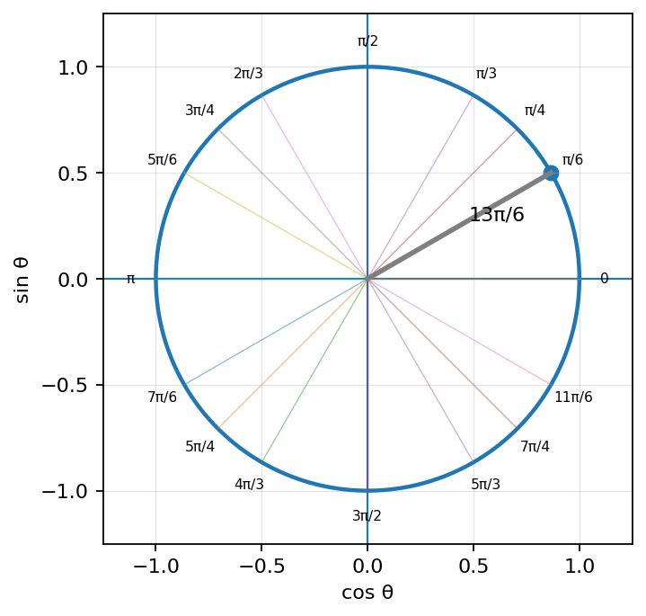
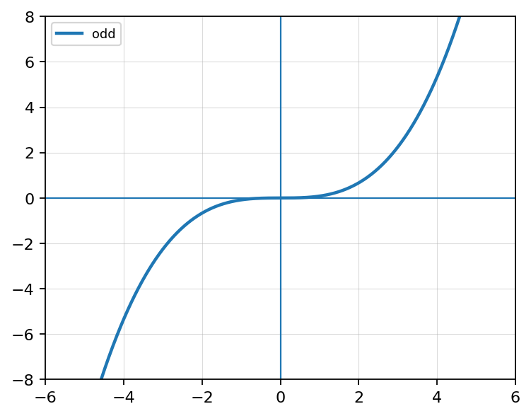
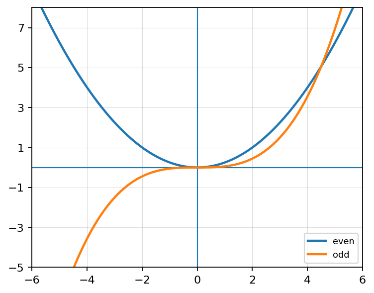

Convert \(\frac{5\pi}{6}\) to degrees.
Evaluate exactly: \[\sin\left(\frac{\pi}{6}\right)\]
Evaluate exactly: \[\cos\left(-\frac{7\pi}{4}\right)\]
A student says, “Angles bigger than \(2\pi\) are not on the unit circle.” Respond with examples and reasoning.

A graph is shown. Use symmetry to classify the function as even, odd, or neither.

Use the table to determine whether the function appears even, odd, or neither.
| \(x\) | \(-2\) | \(-1\) | \(1\) | \(2\) |
|---|---|---|---|---|
| \(f(x)\) | \(-4\) | \(-1\) | \(1\) | \(4\) |
Justify using the table.
Match each description to even, odd, or neither.

Fill in each blank.
Determine whether the function is even, odd, or neither. Justify your answer.
\(f(x)=x^2+x^3\)
Compare the functions \(f(x)=x^2\) and \(g(x)=x^2+3\).
A student claims, “All polynomial functions are either even or odd.”
Design a function that is odd, has at least three terms, and is not a basic parent function.
Explain how you built the function and how you verified its symmetry.
Solve: \[x^2=81\]
Solve: \[(x-4)^2=36\]
Solve: \[2(x+1)^2-10=40\]
Explain why \(x^2=49\) has two real solutions while \(x^3=125\) has only one real solution.